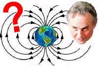
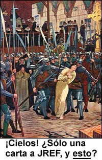
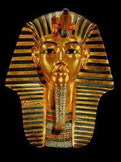
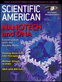
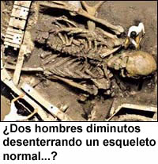

Tonterías mediáticas en el Reino Unido, otra vez
En el Sunday Times del Reino Unido del 16 de mayo de 2004 apareció un artículo titulado: “Importante científico respalda la astrología”, escrito por Johnathan Leake, quien juega a ser editor de ciencia. Esta declaración fue inspirada por un miembro de la Real Sociedad Astronómica, el Dr. Percy Seymour, autor del libro La prueba científica de la astrología —¿estamos sorprendidos?— , quien dice creer que “el desarrollo del cerebro humano puede ser afectado por el campo magnético de la Tierra, especialmente durante el crecimiento en la matriz”. En su libro, Seymour sugiere que el campo magnético de la Tierra es afectado por interacciones con los del Sol y la Luna. Otros planetas como Júpiter, Marte y Venus, en su opinión, también toman parte.
Esta noción es poco aceptable para otros astrónomos. El Dr. Seth Shostak es un astrónomo implicado en el Proyecto Phoenix/SETI, tiene una licenciatura en física de Princeton y un doctorado en astronomía de Caltech. Es el Científico de Programas Públicos del SETI Institute de Mountain View, California, lleva adelante investigaciones radioastronómicas de galaxias, y ha publicado aproximadamente cincuenta papers en revistas profesionales, además de algunos cientos de artículos populares sobre varios temas de astronomía, tecnología, cine y televisión. Su libro Compartiendo el universo apareció en 1988. Su opinión de la idea de Seymour es mordaz. Dice que la teoría es “absurda”, y señala que aunque los grandes planetas como Júpiter tienen campos magnéticos y gravitacionales mucho más poderosos que los de la Tierra, estos son enormemente atenuados por la distancia. En sus palabras: “el campo magnético de Júpiter es alrededor de un billón de veces más débil que el de la Tierra [a esta distancia de Júpiter]. Uno experimentaría un campo magnético mucho más fuerte de las luces de su casa y su lavadora.”
Audaz, el Dr. Seymour se vuelve dulcemente poético al referirse a los efectos líricos de estos campos magnéticos: “[Esto] significa que todo el sistema solar interpreta una sinfonía sobre el campo magnético de la Tierra. Todos estamos afinados genéticamente para recibir un conjunto de melodías diferente de esta sinfonía”. ¡Oh, por favor! ¡Empiezan a aparecer cavidades en mis dientes!
Pero esto es lo que realmente me ofendió y alarmó. El Sunday Times anunciaba:
…Las teorías de Seymour ganaron apoyo calificado de una fuente imprevista. Richard Dawkins, profesor de comprensión pública de la ciencia en la Universidad de Oxford, quien sugirió una vez que los astrólogos deberían ser procesados bajo la ley de descripciones de comercio, dijo que aunque no había leído el libro, las ideas de Seymour sonaban interesantes.
Leyendo eso, y viendo que no era de ninguna manera algo calificado, ni se ampliaba el asunto, me puse en contacto con el profesor Dawkins. Éste respondió:
Johnathan Leake, el editor de ciencia del Sunday Times (Londres), escribió un artículo el domingo 16 de mayo acerca de un libro que apoya a la astrología. Me llamó por teléfono para pedir mi opinión. Yo le dije que no había leído el libro y que por lo tanto no podía ofrecer ninguna opinión al respecto. Entonces me leyó un párrafo de la contraportada, sobre evidencia experimental de que los campos magnéticos pueden influir el desarrollo fetal. Yo dije (aproximadamente): “Bien, todo eso es muy interesante sin duda, pero ¿qué demonios tiene que ver con la astrología?” Al día siguiente supe que Johnathan Leake me había citado dando “apoyo de una procedencia imprevista” y que había dicho que el libro era “interesante”.
El Sunday Times pretende ser un periódico serio. La verdad es que es propiedad de Rupert Murdoch (igual que Fox News). Parece que Johnathan Leake es el corresponsal de ciencia que un periódico de Murdoch merece.
En una nota dirigida a mí, agregó:
Estoy FURIOSO. Por favor difunda la verdad de lo que sucedió…
Por supuesto, en su usual conducta de chiflados, los astrólogos estaban encantados y sonrientes por esta pizca de absurdo. El astrólogo del Reino Unido Russell Grant fue citado diciendo:
Al fin hay alguien que no dice: “Es un montón de tonterías”. Si la luna está ligada a la suba y la baja de las mareas, y los seres humanos son agua en un 70%, ¿por qué la luna no puede afectarnos? ¿De modo que tengamos buen o mal humor según la posición de los planetas?
No, Russell, verás, como la mayoría de los que no somos astrólogos aprendimos en la primaria, la Luna atrae por igual a toda la materia —piedras, grasa, bananas, pelotas de fútbol, búfalos y lavandina embotellada—, no solamente al agua. No tiene nada que ver con el contenido de agua del cuerpo. Y la astrología es un montón de tonterías. Tonterías muy avanzadas.
El Times festejó que cierta vez Margaret Thatcher les dijo a unos miembros del Parlamento:
Yo nací bajo el signo de Libra, por lo tanto soy muy equilibrada.
Bien, eso basta. No podemos discutir con la autoridad, ¿verdad?
Éste es apenas otro ejemplo de ciencia hecha a medias, sensacionalizada tanto por el autor del que seguramente será un best-seller, como por un hombre investido con la tarea de mostrar la ciencia a través de los medios. Estoy seguro de que oirán hablar al Dr. Dawkins sobre éste y otros asuntos, especialmente si se inscriben en el Amaz!ng Meeting 3, el próximo enero en Las Vegas, donde será nuestro orador principal.
Un hereje habla claro
El lector “Bill” de Carolina del Sur nos cuenta:
…Quiero decirle lo extremadamente valioso que encuentro su sitio Web y su fundación. Verdaderamente empezaba a creer que estaba solo, viviendo como vivo en las profundidades del sur, donde la gente sigue pintando sus casas de colores chillones para alejar a los espíritus —aparentemente las gárgolas son muy costosas— y creen que el “hombre raíz” les “podrá raíces”, etc. Incluso mi familia, que está compuesta por gente inteligente y educada, cree en una variedad de fenómenos sobrenaturales y no tolera ninguna sugerencia de que pueda haber otras explicaciones además de las místicas/OVNI/espirituales/etc. en las que se han instalado. Lo he encontrado muy deprimente, y mi perspectiva era muy solitaria.
Lo más cerca que estuve de hacer cambiar a alguien de opinión fue cuando le pregunté a un amigo qué diferencia había hecho en el mundo la “magia” en los milenios en que se la practicó, en comparación con el impacto de la ciencia en unos pocos cientos de años. Pareció pensarlo, así que tal vez llegué realmente a una persona. Por favor disculpe mis divagaciones, pero realmente quiero festejar por su sitio, su fundación, y el trabajo de personas como usted, Shermer, y Penn & Teller, cuya serie “Bullshit!” vi por recomendación suya. ¡Genial! Gracias por hacerme saber que no estoy solo en mi forma de pensar.
Por favor, refiérase a mí sólo como “Bill de Carolina del Sur”, puesto que cualquier otra referencia podría resultar fácilmente en que me quemen en la hoguera. Otra vez: gracias. Ha hecho una gran diferencia.
¿Qué puedo decir? ¡Gracias, Bill, y aléjate de las pilas de leña…!
Ley ignorada
El lector Trevor Dailey, de London, Ontario, Canadá, se encontró con este estatuto canadiense:
Citación: 365. Todo aquél que de manera fraudulenta
(a) pretenda ejercer o usar cualquier clase de brujería, hechicería, encantamiento o conjuro,
se comprometa, a cambio de una gratificación, a adivinar la fortuna, o
(c) pretenda, a partir de su habilidad o conocimiento de una ciencia oculta o artificiosa, descubrir dónde o de qué manera puede hallarse algo que se supone robado o perdido, es culpable de una ofensa punible con convicción sumaria.
R.S., c. C-34, s. 323
Trevor, recuerda que las leyes pueden estar en los libros, pero no hacerse cumplir. Por qué no se eliminan si ya no se aplican, nadie ha sido capaz de resolverlo. Como bien sabemos, esta ley que citas no se está cumpliendo, porque de lo contrario los garitos y consultorios astrológicos estarían vacíos de costa a costa…
El señor Dailey también descubrió el verdadero significado de “hipoalergénico”, en http://www.cbc.ca/consumers/market/microscope/micro_2000/hypoallergenic.html. Vayan allí y descúbranlo por ustedes mismos. ¡Totalmente revelador!
Muy cierto
Una definición, cortesía del lector Stuart Armstrong:
Radiestesia: uso de una horquilla, un par de cucharas u otro elemento para localizar y extraer dinero de personas que creen que se puede localizar y extraer agua usando una horquilla, un par de cucharas u otro elemento.
Homepage del ACSH
El Concejo Americano de Ciencia y Salud (American Council de Science and Health, ACSH) nos solicita: “Por favor, señale nuestra página en http://www.acsh.org“. Listo. Ya pueden hacerlo…
La maldición del Rey Tut, refutada
En enero de 2001 me ocupé en detalle de la leyenda de la “Maldición de la Momia” (http://www.randi.org/jr/01-12-2001.htm), y un acontecimiento reciente me lo recordó. La esencia de lo que escribí es:
La tumba del faraón de 19 años que llegaría a ser conocido como rey Tut fue descubierta por el arqueólogo británico Howard Carter en noviembre de 1922. El descubrimiento, informado a la prensa a principios de 1923, conmocionó al mundo y estimuló la creencia popular, promovida por los medios, en la “Maldición de la Momia”. Para cuando los exploradores entraron en la cámara sepulcral de Tutankamón, la idea de la maldición ya estaba bien establecida. La autora escocesa Minnie MacKay publicó prontamente una dramática advertencia: “los más horribles castigos perseguirán a quien temerariamente invada una tumba cerrada”. Se inventó una “antigua inscripción egipcia” —”La muerte llegará sobre alas veloces a quien toque la tumba del faraón”—, y cualquier muerte o infortunio asociado con la expedición, sin importar cuán remoto fuese, ha sido atribuido desde entonces a la maldición.
Se han elaborado listas de las personas aparentemente fulminadas de maneras misteriosas a causa de la maldición, y aun hoy siguen ampliándose para probar la veracidad de la afirmación. No sólo quienes estuvieron realmente implicados en el descubrimiento y la excavación de la momia, sino además casi todos los que estuvieron conectados incluso remotamente con el evento, fueron puestos en consideración de manera forzada. El hijo de una secretaria que trabajó una vez para un científico que “emitió una opinión” sobre Tut, murió súbitamente y fue pregonado como la “última víctima” de la Maldición. Un trabajador del Museo de El Cairo que había expresado tener dudas sobre la Maldición, estuvo implicado en un accidente automovilístico fatal y se dijo que murió murmurando en egipcio antiguo, un lenguaje totalmente desconocido en la actualidad. La prensa tuvo un día de campo con estos artículos, y la fiesta continúa.
Yo hice una lista de las veintidós personas de las que podía esperarse lógicamente que cayeran por la temida maldición. Están incluidos todos los que desenvolvieron a Tut, diseccionaron la momia, la sometieron a rayos X y se metieron de una u otra manera con el cuerpo del muchacho. Un estudio de estas personas produce datos muy interesantes. En primer lugar, ¡la maldición parece ser beneficiosa! La vida promedio de los implicados fue de más de 73 años. Esto supera por un año la expectativa de vida consignada en registros actuariales para personas de ese período, profesión y clase social. Howard Carter, la única persona que con toda seguridad debió haber sido fulminado por cualquier maldición, el primero que descubrió y manipuló la momia misma, no murió hasta 1939, a la edad de 64, 16 años después de su intervención. La duración media de la vida de estas personas luego de abrir la tumbra fue de 23 años.
Quienes de hecho irrumpieron en la cámara sepulcral y removieron y manipularon los restos de la momia, vivieron en promedio más de 26 años luego de su íntima implicación con la momia.
Hoy, en 2004, la historia de la “Maldición de la Momia” recibe otro golpe. Robert E. Fulton Jr., quien tenía 14 años en 1923 cuando se abrió la tumbra del rey Tut, acaba de morir a la edad de 95. Fulton, que nació en Nueva York, falleció en su casa la semana pasada, 81 años después de asistir a la apertura de la tumba. Parece que desenterrar una momia ayuda a tener una vida larga. Se terminaron las maldiciones.
Por favor, observen: ningún medio atribuyó la muerte de Fulton a la temible maldición, ni la describió como “prematura” o “inusual”. Esta ausencia de hipérbole es alentadora.
Otro modo posible
Siempre estamos atentos a cualquier fenómeno psicológico o fisiológico que pueda explicar de una manera más lógica los informes de supuestas experiencias paranormales o psíquicas. El lector “Grant” nos cuenta:
Me encanta el sitio… y quisiera aportar mi grano de arena, que puede que encuentre interesante.
No estoy seguro si sabe mucho del raro transtorno de ASP (Aware Sleep Paralysis, Parálisis de Sueño Consciente). Yo mismo sufro tal trastorno, y la mayor parte de mi vida atribuí los síntomas a fenómenos sobrenaturales. Puede describirse en pocas palabras como un estado de completa lucidez durante la inconciencia. Partes de mi cerebro se dirigen a la inconciencia mientras otras quedan rezagadas, creando un estado extraño entre las dos. La parálisis es uno de los síntomas, un estado natural en el que todos entramos cuando dormimos para impedir que el cuerpo se lastime mientras soñamos. Durante la ASP, uno simplemente sigue despierto mientras el cerebro empieza a apagar el cuerpo. No hace falta decir que es una experiencia terrorífica.
Otros síntomas incluyen alucinaciones auditivas y visuales. Al dormirse el cerebro lógico, la mente tiene carta blanca para explorarse a sí misma, es decir, uno comienza a soñar estando consciente. Mi juventud estuvo plagada de “eventos sobrenaturales”, seres extraños que caminaban por mi dormitorio, voces que me hablaban en la noche. El conocimiento de que seguía despierto me llevó a una conclusión: fantasmas.
Al entrar en ese estado, uno suele percibir una extraña clase de zumbido. De un modo interesante, los practicantes de meditación profunda de “nivel superior” describen una experiencia vibratoria similar. ¿Es posible que simplemente se estén induciendo un tipo de ASP?
Se ha sugerido que quedarse dormido con los ojos abiertos puede inducir ASP en muchas personas. El cerebro recibe indicios mezclados y el proceso se embrolla. Se sabe que los practicantes del “viaje astral” usan una técnica por la que miran un punto de la pared durante muchas horas, hasta que la conciencia empieza a perder pie. Suena familiar.
Hay muy poca información sobre este trastorno, y ninguno de los doctores que he visto había oído de él. Si no fuera por Internet, probablemente habría costeado personalmente las casas de descanso de varios exorcistas y sacerdotes.
Sí, esto es sumamente interesante, Grant. Son miríada los trastornos extraños que puede sufrir la masa de gelatina gris que tenemos tras los ojos. Nuestra única advertencia aquí es no tomar la ruta “mágica” si notan tales síntomas; busquen ayuda profesional. Para mí, eso significa psicología clínica, no astrología, encantamientos, brujería o quiromancia. Con frecuencia la ciencia moderna puede suministrar un alivio adecuado a tales aflicciones, y con menos frecuencia, curas. Familiarícense también con la naturaleza de los fenónemos hipnagógicos e hipnopómpicos. Es igualmente fascinante.
Buscando ansiosamente los poderes de Geller
Un lector obviamente sueco pregunta, refiriéndose al asombroso historial de Geller ayudando a equipos de fútbol del Reino Unido:
¿Sabe cómo puedo lograr que Uri Geller apoye a todos los demás equipos de la liga de fútbol de Suecia excepto a mi equipo? ¿O a todos los demás equipos en el próximo campeonato europeo? ¡A juzgar por su historial, debe tener “grandes poderes” que funcionan en contra de él!
Invasión de los curanderos
El lector Jason Colavito nos cuenta de un perturbador artículo:
Mi compañero de cuarto es vegetariano y está suscrito a una revista de cocina vegetariana. Me sorprendió encontrar el nombre de usted mencionado en tan extraño contexto, y pensé que le agradaría un informe de cómo una publicación de vida vegetariana y natural se orienta a las percibidas tendencias New Age de sus lectores y promueve la pseudociencia, a expensas de los beneficios científicamente sólidos de ese estilo de vida.
El número de junio de la revista Vegetarian Times, una especie de versión sin carne de Martha Stewart Living, trae en su sección mensual “bienestar” un artículo llamado “Curando con homeopatía”, de Alan Pell Crawford. Esta cobertura “noticiosa” muestra a la homeopatía como una alternativa de bajo costo a la “arrogante” medicina occidental, y hace algunas afirmaciones descabelladas sobre por qué la homeopatía funciona.
Luego de describir a la homeopatía como cantidades diluidas de un remedio que a potencia plena imitaría los síntomas de una enfermedad, el autor hace esta afirmación: “Aunque la mayoría de los médicos rechazan la homeopatía, aceptan de buen grado un enfoque similar con el uso de vacunas, que operan sobre principios similares de ‘lo similar cura lo similar’.” Más adelante, Crawford vuelve a enfatizar esta aseveración, citando al “naturópata” Darin Ingles de New England Family Health Associates, quien dice que “la medicina en alta dilución no es nada nuevo para la ciencia, porque las inyecciones contra la alergia y las vacunas también implican medicinas altamente diluidas”. El artículo ofrece una lista de condiciones que la homeopatía puede aliviar o curar, incluyendo la varicela, las quemaduras solares y la bronquitis.
Por favor observen: esta comparación con la vacunas es algo que los homeópatas han promovido entre las víctimas poco sofisticadas de la farsa. No hay ningún paralelo que encontrar, y a pesar de que han sido perfectamente informados al respecto, los curanderos siguen fomentando la idea, tratando de ganar aceptación a costa de la reputación de un descubrimiento probado y efectivo de la ciencia médica. El señor Colavito señala esto más adelante.
Crawford no indica que el NEFHA (http://www.nefha.com) es un centro “naturopático” y de medicina china. En su sitio Web informa a los visitantes que deberían preferir el NEFHA a la medicina occidental porque “tenemos música clásica de fondo y una variedad de tés calientes para beber mientras espera su turno”.
Lo que es más importante, al comparar los químicos homeopáticos, diluidos al punto de la inexistencia, con los virus debilitados de las vacunas que enseñan al sistema inmune a reconocer y combatir agentes patógenos, Crawford e Ingles tratan de apropiarse del poder de las vacunas para la causa de la homeopatía. Peor aun, la mayoría de las vacunas están diseñadas para prevenir enfermedades; la homeopatía afirma poder no sólo prevenirlas sino también curarlas. Extrañamente, aseguran que “lo semejante cura lo semejante”. Sabemos en qué se parecen los virus debilitados a sus equivalentes más potentes. ¿Cuánto se parece el agua al cansancio ocular, la varicela, los hematomas o la constipación?
Crawford aparentemente vio el informe de ABC News en que el usted, Randi, le decía al público que la homeopatía es “mitología”. Refiriéndose al Desafío de USD 1.000.000, Crawford nos presentó a Marcia Goodrich, residente de Houghton, Michigan, quien asegura que fue la homeopatía, no la habilidad de su cirujano ni la medicación recetada que tomó, lo que impidió los moretones y la hinchazón después de una extracción dental. Goodrich le dijo a Crawford que no tiene interés en cobrar el millón: “Es suficiente satisfacción —dice Crawford (no Goodrich)— vivir en una sociedad cerrada pero diversa, donde abundan los sanadores y otros librepensadores. Cuando la gente vive tan cerca del borde, acaban confiando unos en otros, y en la sabiduría popular que personas sofisticadas en condiciones más cómodas olvidan demasiado a menudo.”
Esto es perturbador no sólo por las razones obvias, sino también porque el artículo se orienta al respeto por la diversidad de su audiencia, generalmente liberal, para fomentar la afirmación falaz de que la homeopatía es igual a la ciencia médica porque, en un clima de diversidad, todos los elementos diversos deben ser iguales.
Tal vez el Vegetarian Times crea que sus lectores no son “sofisticados”, pero parece un insulto a los vegetarianos incluir en una revista de recetas una cobertura mensual sobre terapias alternativas que no han sido probadas y son potencialmente peligrosas.
Gracias, Jason. Observen que el lenguaje cálido, efusivo, “comunitario” y “librepensador” que Crawford emplea, se las ingenia para eludir por completo el desafío por el millón de dólares. Ese desafío, amigos, es la espina que los curanderos no pueden quitarse de su pie colectivo. Siempre está ahí, esquivado y menospreciado, devaluado y negado. Pero continúa…
Por favor léanlo
Linda Rosa nos recuerda que los lectores de la revista Scientific American 1 conocerán la “Attachment Therapy” en el número de junio de 2004, que ya está en distribución. El columnista Michael Shermer ha escrito “Muerte por teoría”, un informe conciso y escalofriante sobre la muerte de la niña de diez años Candace Newmaker en abril de 2000, a manos de Connell Watkins y Julie Ponder. La tesis de la sección del Dr. Shermer es que Candace murió a causa de una pseudociencia que debería ser prohibida “antes de que torture y mate a más niños”. Les pido a los lectores que por favor sometan esta sección a la consideración de cualquiera que esté indeciso sobre este importante asunto.
Magos timoratos
El lector Steve Bird de Toronto opina:
Yo crecí en los ‘70, y de niño veía magos aquí y allá, y tuve la suerte de que después me dijeran “la magia no existe”. Ese Kreskin estaba en TV y su programa terminaba con un anuncio que decía que todo era un truco, o algo así. De todos modos, para cuando Kreskin dejó la TV, dejaron de decir “la magia no existe”, y antes de que nos diéramos cuenta, la gente hablaba del Proyecto Libro Azul, el poder de las pirámides, el arca de Noé, las cucharas dobladas, Piegrande y las sesiones espiritistas. Creo que eso prueba que a menos que se le diga todo el tiempo, una y otra vez, que estas cosas son tonterías, el público empieza a creerlas de nuevo. Creo que usted tiene una batalla cuesta arriba, y necesita llegar a más gente con su mensaje. Tal vez una “sociedad de magos éticos” podría ayudar; o recordarle a la gente la frase “un psíquico es un mago fraudulento”.
El 90% de los norteamericanos creen en Dios, y un 68% en Satanás, si eso tiene algún sentido. Estos números son demasiado altos; yo esperaría algo así como el 10%. Parece que aun las personas inteligentes son creyentes, pero supongo que un mago como usted debe saber cuán fácil es engañar incluso a las mentes más brillantes, especialmente cuando quieren que se las engañe. Constantemente me sorprendo de cuánta gente sigue “la palabra de Dios”. Tengo esto colgado en mi estudio:
¿Hay un gran poder en este vasto universo?
¿Un poder que desea que nos vaya bien en la vida?
¿Un poder que quiere que tratemos a los demás como querríamos ser tratados?
¿Un poder que considera que lo más importante es vivir según ciertas reglas?
¿Un poder que queremos que nos perdone cuando nos descarriamos?
¿Un poder tan fantántico que con él, este mundo puede cambiar para siempre?
¡Mejor que lo creas! Mira el espejo…
Steve, como he dicho otras veces, la JREF no se ocupa específicamente de las creencias religiosas porque la creencia en una deidad o en una vida después de la muerte es una elección filosófica, no una afirmación verificable o siquiera examinable —aunque no soy en absoluto tímido para dar a conocer mi opinión sobre esos asuntos—. Sobre esa “sociedad de magos éticos” que sugieres, existe una Sociedad de Magos Norteamericanos (Society of American Magicians, SAM), que fue fundada en 1902 y mejorada sustancialmente por la presencia de Harry Houdini, quien introdujo en la organización un vigoroso aspecto anti-psíquico. Hoy, ese aspecto ha sido esencialmente abandonado.

Cuando yo —como miembro de la SAM— busqué apoyo técnico y moral en la Sociedad cierta vez que tuve problemas para defenderme de Geller, el abogado decidió evadir esa solicitud. Enseguida renuncié a la Sociedad, a pesar de que tengo el honor de figurar en el Salón de la Fama… Fue una terrible desilusión. La SAM es una organización que estuvo alguna vez interesada en brindar su prestigio y pericia para exponer farsantes y estafadores que le quitan el dinero a víctimas inocentes usando los trucos que los artistas respetables claramente anuncian como tales. Fue triste que se echasen atrás por miedo a ser políticamente incorrectos y/o legalmente culpables. La “Sociedad de Magos Éticos” ya no existe, Steve. Ahora se esconden bajo la cama…
Sorpresa del Guardian
El lector del Reino Unido Chris Turner nos informa sobre este artículo, que resulta decepcionante por dónde apareció:
Esta basura apareció en la edición del sábado del Guardian, un periódico que por lo demás es relativamente sensato:
P: Estoy esperando mi segundo bebé y tengo una condición hepática llamada colestasis obstétrica. ¿Conoce alguna terappia o regulador natural del hígado?
R: La colestasis obstétrica es cuando la secreción de bilis se inhibe durante el embarazo, de modo que las toxinas permanecen más tiempo en el hígado. Evite las grasas saturadas, el azúcar refinado y el alcohol, los cuales esfuerzan el hígado; trate de evitar el aire contaminado; consuma alimentos orgánicos y use cosméticos, humectantes, jabones y shampús orgánicos naturales para reducir al mínimo el ingreso de toxinas. Los alimentos con alto contenido de azufre, como el ajo, la cebolla y los huevos, mejoran la función hepática, igual que las fuentes de fibra como las frutas y verduras, el salvado de avena y los porotos, que eliminan las toxinas del organismo. El cardo mariano, o cardo lechal, protege el hígado y mejora la desintoxicación; los estudios han mostrado que es seguro tomarlo durante el embarazo, pero consulte primero con su médico.
Emma Mitchell es terapeuta natural. Antes de seguir las recomendaciones de Emma, se le recomienda consultar a su médico acerca de cualquier problema o condición especial de salud. Envíe sus preguntas a Bienestar, Guardian Weekend, 119 Ferrington Road, Londres EC1R 3ER. Email: ask.emma@guardian.co.uk
¿Evitar “el aire contaminado”? ¿Cualquier aire contaminado, NOX [óxido nitroso], ozono, SO2? Exigimos que se nos responda. “¡George! No pongas la boca en el escape del coche. ¡Sabes que es malo para tu hígado!” ¿”Azúcar refinado”? El azúcar sin refinar es sólo azúcar (sacarosa) con color y sabor curiosos, quizá con un bajo porcentaje de impurezas. Sigue siendo sacarosa en más del 98%, así que ¿no es lo mismo? “Cosméticos, jabones, etc., orgánicos naturales.” ¡Válgame! ¡Si son tan peligrosos, no deberíamos usarlos en absoluto! Como dicen, “¡CONSULTE PRIMERO CON SU MÉDICO!”. Deberían agregar “antes de seguir estos consejos idiotas”.
Si es una terapeuta natural, ¿los médicos normales son “antinaturales”?
Comparto su consternación, señor Turner.
Fraude religioso transparente
Un artículos de Saalim Alvi de Riad, en La Nueva Nación, una de las más importantes publicaciones de Bangladesh, anunció el descubrimiento de un esqueleto humano gigantesco en el desierto de la región sudeste de Arabia Saudita, adjuntando una sorprendente foto como prueba.
El reportero Saalim Avi escribe: “Esto prueba lo que Alá SWT dijo en el QURAN sobre el pueblo de la nación de AAD y la nación de HOOD.” No he podido descubrir lo que significa “SWT”, pero supongo que es alguna clase de modificador lisonjero que se usa al referirse a esta versión de una deidad. Así que ¿quiénes eran estos pueblos de “AAD” y de “HOOD” de los que escribe? Él nos lo dice:
Eran tan altos, anchos y poderosos que podían arrancar árboles con una sola mano. Pero lo que sucedió luego, cuando se descarriaron y desobedecieron a Alá SWT, fue que Alá SWT destruyó a toda la nación. ULEMA KIRAM de Arabia Saudita cree que este cuerpo pertenece a la nación de AAD. Los militares saudíes se hicieron cargo de toda el área. Y a nadie se le permite ingresar en la región excepto al personal de Saudi ARAMCO. El gobierno saudí lo ha mantenido en secreto, pero algunos helicópteros militares tomaron fotos desde el aire. Y una de ellas circula en Internet aquí en Arabia Saudita.
¿En serio? Bien, los miembros de algo llamado Libertad de Fe Internacional (Faith Freedom International, FFI), un grupo que se dedica a devolverle un poco de sensatez al Islam, investigó un poco y encontró otra foto. Aquí está:

Ésta es una foto aérea de una fosa cercana a Hyde Park, New York, tomada en septiembre de 2000. El sitio, donde se había hallado el esqueleto de un mastodonte, estaba siendo excavado por el Instituto de Investigación Paleontológica y el Departamento de Ciencias Geológicas de Cornell. No había ningún esqueleto de un gigante, y por cierto que no está en Arabia Saudita. La gente de FFI cree que este fraude fue un intento de fortalecer la creencia en historias contadas por el profeta Mahoma. Éste escribió, por ejemplo, que Adán medía 60 codos de alto (unos 27,5 metros), y que los humanos habían ido disminuyendo su estatura desde su creación. Por el contrario, la paleontología muestra que los humanos han estado aumentando constantemente de tamaño. Homo habilis, que vivió hace unos dos millones de años en África oriental, no medía más de un metro y medio. La historia de Mahoma según la cual Adán y otras personas de la antigüedad eran extremadamente altas es sólo eso: una historia.
El sitio de FFI dice:
Si en estos tiempos de Internet y comunicación mundial, un periódico importante no está abochornado por inventar una mentira tan obvia para promover el Islam, sólo podemos imaginarnos cómo se fraguaron los demás milagros y actos nobles atribuidos a Mahoma en tiempos en que las personas educadas eran escasas y los puntos de vista opuestos eran amordazados.
Estoy de acuerdo… Y eso se aplica también a las zarzas en llamas y al agua que se convierte en vino…
En conclusión
El Guardian y el Sunday Times, dos periódicos del Reino Unido, nos decepcionan esta semana. De estas cosas necesitamos quejarnos, amigos, en un esfuerzo por hacerlos actuar de un modo más serio y responsable. Cuando vean la oportunidad de hacer eso, envíen una carta o un e-mail para hacerles saber que están ofendidos…
Recuerden. El 1000º aniversario de Sylvia Brown será el próximo domingo 30. Envíenle una nota de felicitaciones por haber evitado su convenio con JREF durante este período récord. Mencionen mi nombre.

Notas
- 1
-
Investigación y Ciencia es la edición en español de Scientific American, con unos pocos meses de demora en los contenidos.
Comentarios
Comments powered by Disqus